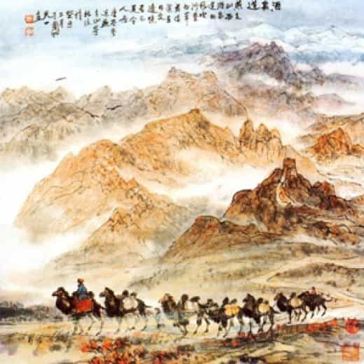

< < < Back
The Age of Commerce – Return Of Kings
Foreword
The “Fate Of Empires and Search For Survival” is an essay written by Sir John Glubb and published in 1977. Sadly, The Fate Of Empires is no longer in publication, but there are second hand copies on eBay and a free pdf version online.
The different ages in which empires change is remarkably similar. These are characterised by a series of interlinking events which led from one age to another. The ages in empires are the age of pioneers, the age of conquest, the age of commerce, the age of affluence, the age of intellect and the age of decadence. These ages come in the sequence denoted and often interlap with one another as time progresses.
The Age Of Commerce
“Let us now, however, return to the life-story of our typical empire. We have already considered the age of outburst, when a little regarded people suddenly outbursts on to the world stage with a wild courage and energy. Let us call it the Age of Pioneers.
Then we saw that these new conquerors acquired the sophisticated weapons of old empires, and adopted their regular systems of military organisation and training. A great period of military expansion ensued, which we may call the Age of Conquests. The conquests resulted in the acquisition of vast territories under one government, thereby automatically giving rise to commercial prosperity. We may call this the Age of Commerce.”
With the conquest of vast areas of land or overseas domains, an emerging empire now has access to goods it did not have before.
“The conquest of vast areas of land and their subjection to one government automatically acts as a stimulant to commerce. Both merchants and goods can be exchanged over considerable distances. Moreover, if the empire be an extensive one, it will include a great variety of climates, producing extremely varied products, which the different areas will wish to exchange with one another.”
By means of trade and commerce, the conqueror people now accumulate wealth by the goods flowing through its borders.
“Even the savage and militaristic empires promoted commerce, whether or not they intended to do so. The Mongols were some of the most brutal military conquerors in history, massacring the entire populations of cities. Yet, in the thirteenth century, when their empire extended from Peking to Hungary, the caravan trade between China and Europe achieved a remarkable degree of prosperity – the whole journey was in the territory of one government.”
In the article “The Age of Conquests“, we saw how Genghis Khan united the tribes of the steppe; took on the mighty empire of China, and defeated them. For all the barbarism under his leadership, Khan wanted his people to benefit from his newly created empire. Thus Genghis Khan established trading and commerce.
The conquest of vast areas of land, or overseas territories, to one government automatically acts as a stimulant to commerce. Both merchants and goods can be exchanged over considerable distances. Moreover, if the empire is an extensive one, it will include a great variety of climates, producing extremely varied products, which the different areas will wish to exchange with one another.
During the time of Marcus Aurelius, Rome was importing and exporting goods from China (then under the Han Dynasty). The Weilue, by Yu Huan, is a Chinese account, detailing several aspects of Han China , including the trades between China and the Da Quin, which we know as the Romans.

However, commerce creates a problem.
“The Age of Conquests, of course, overlaps the Age of Commerce. The proud military traditions still hold sway and the great armies guard the frontiers, but gradually the desire to make money seem to gain hold of the public. During the military period, glory and honour were principal objects of ambition. To the merchant, such ideas are but empty words, which add nothing to the bank balance.”
It is at this stage that the great empire begins its decline by planting the seeds of its own destruction.
“The first half of the Age of Commerce appears to be particularly splendid. The ancient virtues of courage, patriotism and devotion to duty are still in evidence, The nation is proud, united and full of self-confidence. Boys are still required, first of all, to be manly, to ride, shoot straight and to tell the truth.”
In the Roman empire, senators and their sons were forbidden from engaging in trade, and instructed instead to dedicate themselves in military training. When profit comes before the values of the empire, the people shift their priorities from the nation to themselves. Profit, and not honour become the aspiration of the new generation.
“There does not appear to be any doubt that money is the agent which causes the decline of this strong, brave and self-confident people. The decline of courage, enterprise and a sense of duty is, however, gradual.”
This self centered attitude marks the beginning of the end.
“The first direction in which wealth injures the nation is a moral one. Money replaces honour and adventure as the objective of the best young men. Moreover, men do not normally seek to make money for their country or their community, but for themselves…Education undergoes the same gradual transformation. No longer do schools aim at producing brave patriots ready to serve their country. Parents and students alike seek the educational qualifications which will command the highest salaries. The Arab moralist, Ghazali (1058-1111), complains in these very same words of the lowering of objectives in the decaying Arab world of his time. Students, he says, no longer attend college to acquire learning and virtue, but to obtain those qualifications which will enable them to grow rich. The same situation is everywhere evident amongst us in the West today.”
Conclusion
The Age of Commerce occurs as a result of the vast empire that the Age of Conquest brings to the conquerors. In an empire, commerce becomes unbound by passports, permits, customs, boycotts and political interference. Large empires can produce an assortment of goods.
The Age of Commerce brings unforetold wealth to the conquerors. However, wealth corrodes the spirit of men, and slowly eats away at the honour and courage of the people.
Read More: The Age Of Conquests